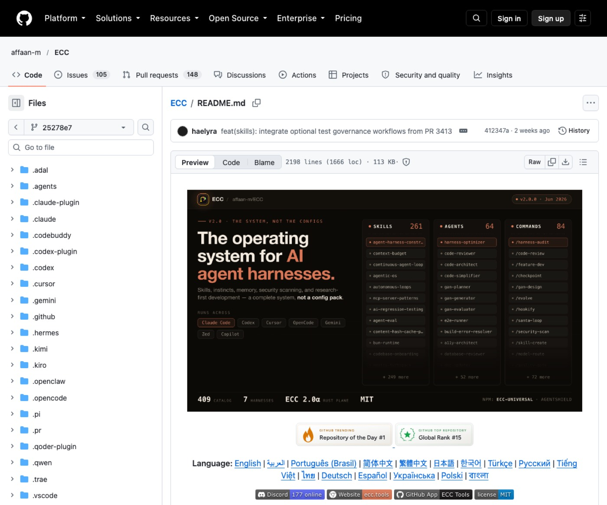
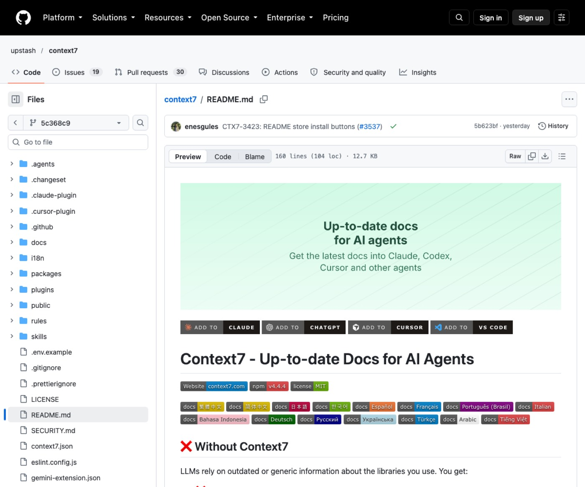
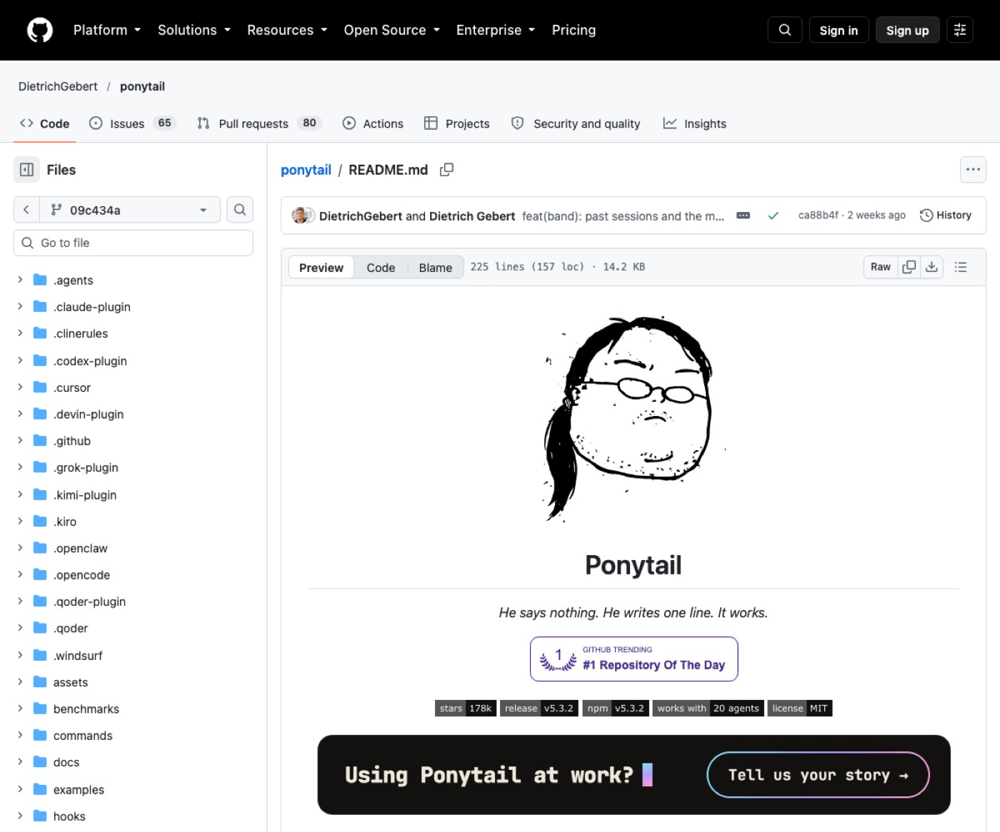
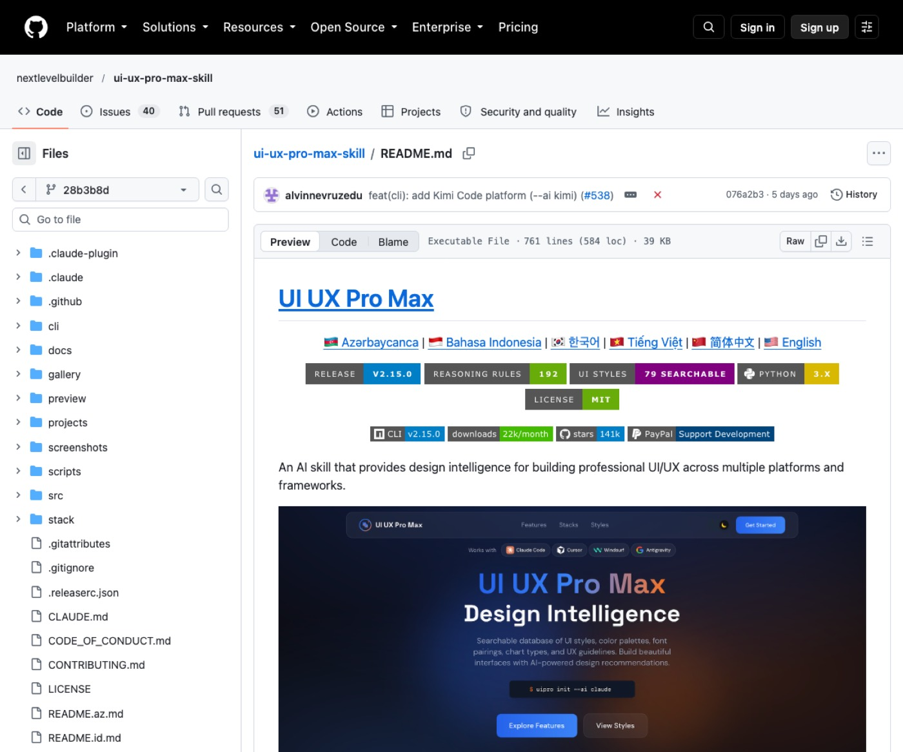
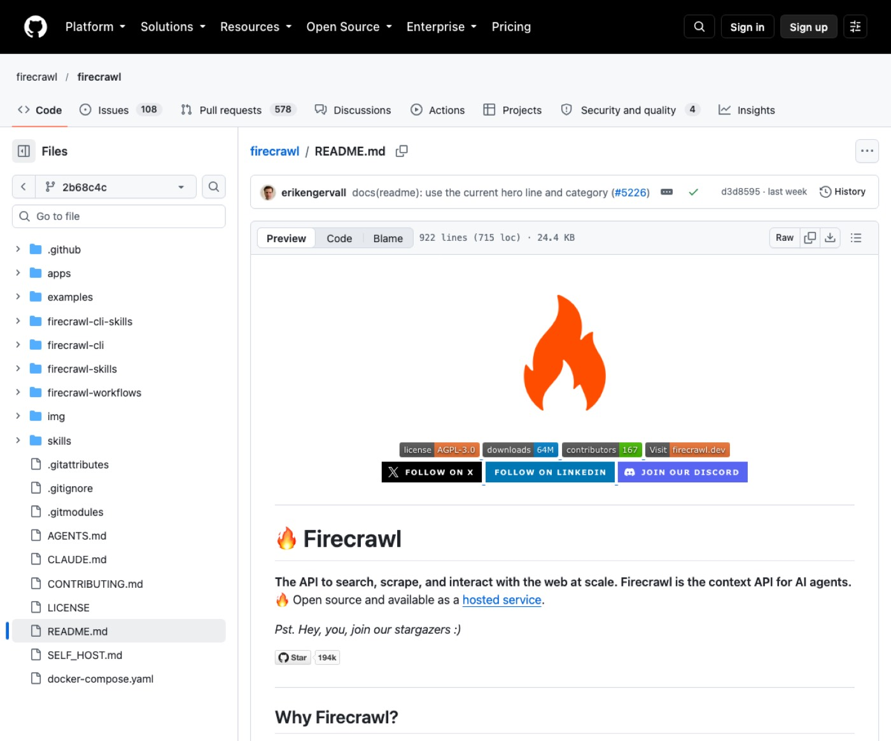

요즘 뜨는 자동화 도구 5
30초 요약
- 반복 작업과 코딩 에러를 줄여주는 도구예요.
- 설정 복사부터 데이터 수집까지 바로 도와줘요.
- 비용과 시간을 아끼며 업무 효율을 높여보세요.
| 이런 분께 | 혼자서 업무 자동화와 효율화를 빠르게 끝내고 싶은 분께 맞아요. |
|---|---|
| 코딩 에이전트 환경 | Claude Code 등 지원 환경을 준비하세요. |
| 실행 런타임 | Node.js나 Python 환경이 필요해요. |
| 서비스 계정 | 도구별 API 키 발급 계정을 준비하세요. |
| 이런 분께 | 혼자서 업무 자동화와 효율화를 빠르게 끝내고 싶은 분께 맞아요. |
|---|---|
| 코딩 에이전트 환경 | Claude Code 등 지원 환경을 준비하세요. |
| 실행 런타임 | Node.js나 Python 환경이 필요해요. |
| 서비스 계정 | 도구별 API 키 발급 계정을 준비하세요. |
초보 개발자나 기획자가 체계적인 개발 절차를 바로 잡을 때 써요.
세팅된 수백 개 스킬과 에이전트 환경을 그대로 복사해 줘요. 계획부터 테스트까지 개발 과정을 자동으로 연결해요.

npx ecc-universal@2.2.3 setup
우리 프로젝트 [서비스명]의 기본 폴더 구조와 개발 계획을 세워주세요.
작성한 코드의 버그를 찾고 필요한 테스트 코드를 추가해 주세요.
현재 작업 내용에 보안 취약점이 없는지 꼼꼼히 점검해 주세요.
동일 환경에 여러 설치 방식을 중복해서 깔지 마세요.
개발자나 직장인이 최신 라이브러리 공식 문서를 찾을 때 써요.
최신 공식 문서를 가져와 인공지능의 거짓 답변을 막아요. 옛날 정보 대신 정확한 버전별 예제를 공급해요.

npx ctx7 setup
[라이브러리명] 최신 버전의 로그인 구현 예제 코드를 보여주세요.
[프레임워크명] 공식 문서를 참고해서 기본 라우터 설정을 작성해 주세요.
현재 설정에 잘못된 옵션이 있는지 [패키지명] 최신 문서와 대조해 주세요.
등록된 라이브러리 문서는 커뮤니티 기여물이니 정확도를 확인하세요.
1인 사업자나 개발자가 인공지능 토큰 비용을 아낄 때 써요.
불필요한 코드를 쳐내어 토큰 소비와 비용을 줄여줘요. 기존 코드를 최대한 재사용하며 안전하게 일해요.

/plugin marketplace add DietrichGebert/ponytail /plugin install ponytail@ponytail
지금 작성한 코드에서 불필요하게 긴 부분을 한 줄로 줄여주세요.
현재 변경 사항 전체를 시니어 개발자 관점에서 꼼꼼히 리뷰해 주세요.
프로젝트 전체 코드에서 가장 먼저 고쳐야 할 위험 요소를 알려주세요.
단순 줄이기만 하지 않고 필수 보안과 검증 로직은 유지해요.
디자인 감각이 부족한 1인 창업자가 화면을 꾸밀 때 써요.
업종에 어울리는 색상과 글꼴 및 레이아웃을 추천해요. 디자인을 몰라도 완성도 높은 사이트 스타일을 만들어요.

/plugin marketplace add nextlevelbuilder/ui-ux-pro-max-skill /plugin install ui-ux-pro-max@ui-ux-pro-max-skill
[업종명] 브랜드에 어울리는 추천 색상 팔레트와 폰트 조합을 알려주세요.
[서비스명] 랜딩페이지에 가장 효과적인 레이아웃 구조를 추천해 주세요.
현재 웹페이지 디자인에서 피해야 할 스타일 요소를 점검해 주세요.
파이썬 3 환경이 컴퓨터에 미리 설치되어 있어야 해요.
시장 조사나 경쟁사 분석 데이터를 모으는 마케터가 써요.
웹사이트 주소만 넣으면 깔끔한 마크다운이나 표로 변환해요. 복잡한 차단 환경을 뚫고 웹 데이터를 수집해요.

npx -y firecrawl-cli@latest init --all --browser
[경쟁사URL] 웹페이지 전체 내용을 깔끔한 마크다운 텍스트로 긁어와 주세요.
[회사명] 공식 홈페이지의 모든 요금제 정보를 찾아서 표로 정리해 주세요.
[검색어] 관련 최신 웹 검색 결과를 찾아서 핵심 내용만 요약해 주세요.
공식 문서에서 사용량 한도와 크레딧 조건을 확인하세요.
하나씩 따로 쓰기보다 이렇게 이어 쓰면 편해요.
| 도구 환경을 처음 맞출 때 | ECC로 검증된 스킬 설정을 복사해 기본 틀을 잡으세요. |
| 새 기능을 만들거나 코딩할 때 | Context7으로 최신 공식 문서를 읽어 실수를 줄이세요. |
| 화면 스타일을 잡을 때 | UI UX Pro Max로 업종에 맞는 색상과 배치를 정하세요. |
| 코드를 점검하고 정리할 때 | Ponytail로 군더더기를 없애고 토큰 비용을 아끼세요. |
| 시장 조사를 할 때 | Firecrawl로 경쟁사 웹페이지 데이터를 긁어와 분석하세요. |
필수 프로그램 버전이 맞는지 확인하세요. 자세한 설치 환경은 공식 문서에서 확인하세요.
해당 서비스의 공식 대시보드 사이트로 이동하세요. 회원가입 후 발급 메뉴에서 키를 복사하세요.
요청문에 구체적인 조건과 예시를 함께 적어주세요. 도구 이름을 문장에 직접 언급하면 더 정확해요.
용도가 달라 함께 쓰면 작업 효율이 크게 올라가요. 같은 역할을 하는 설정만 겹치지 않게 주의하세요.
매주 새 도구를 영상으로 고르고, 따라 하는 법은 여기에 쌓아요.